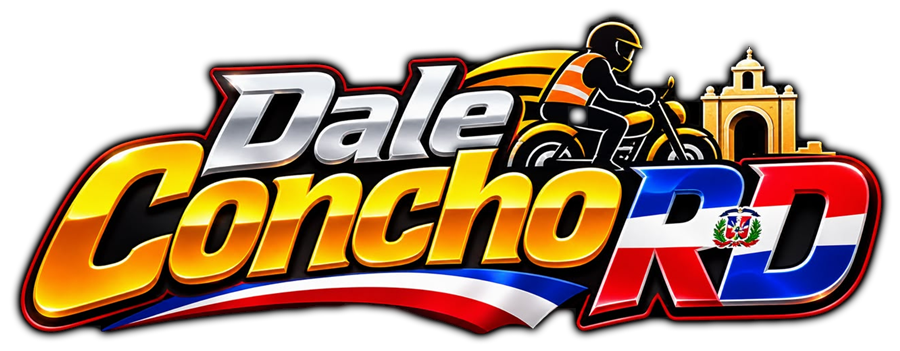
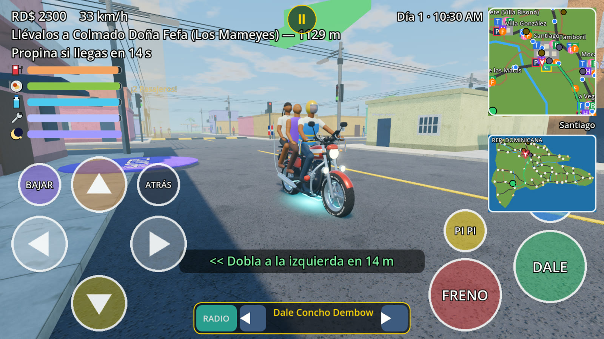
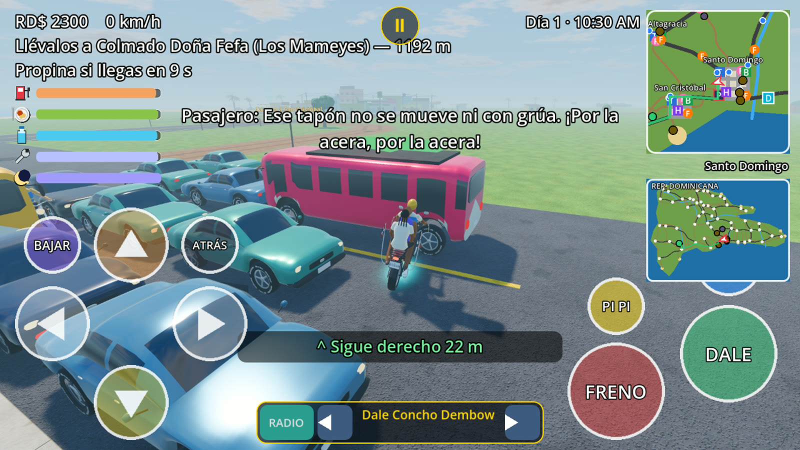
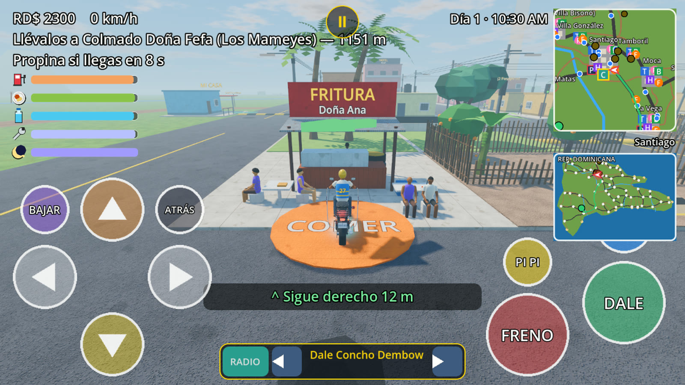
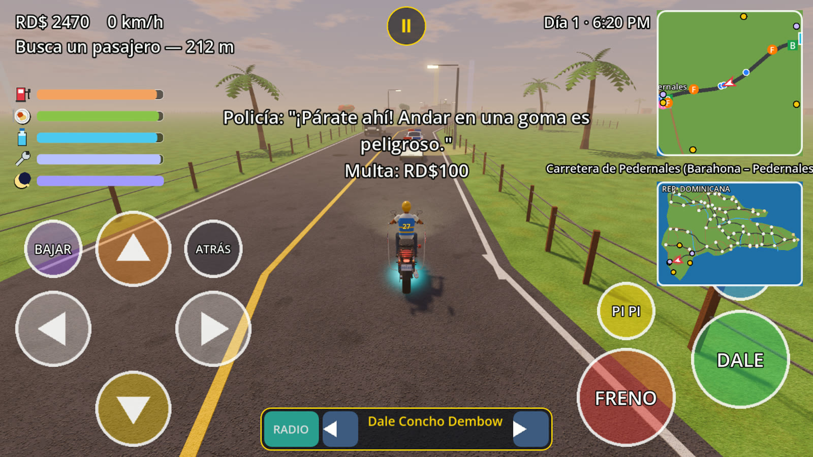
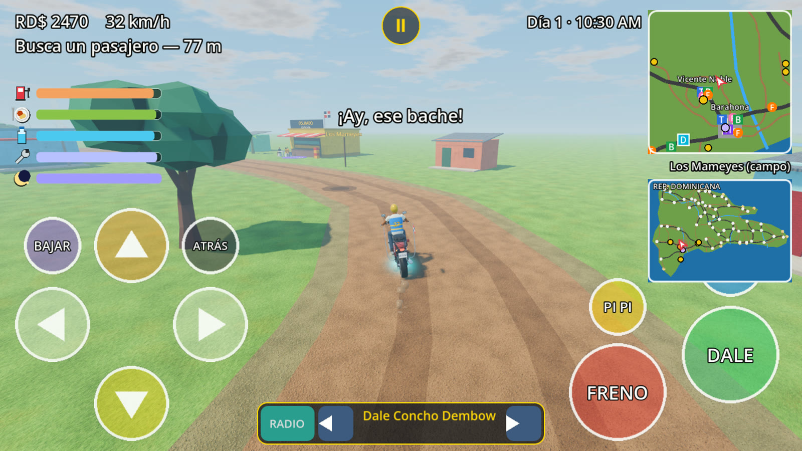
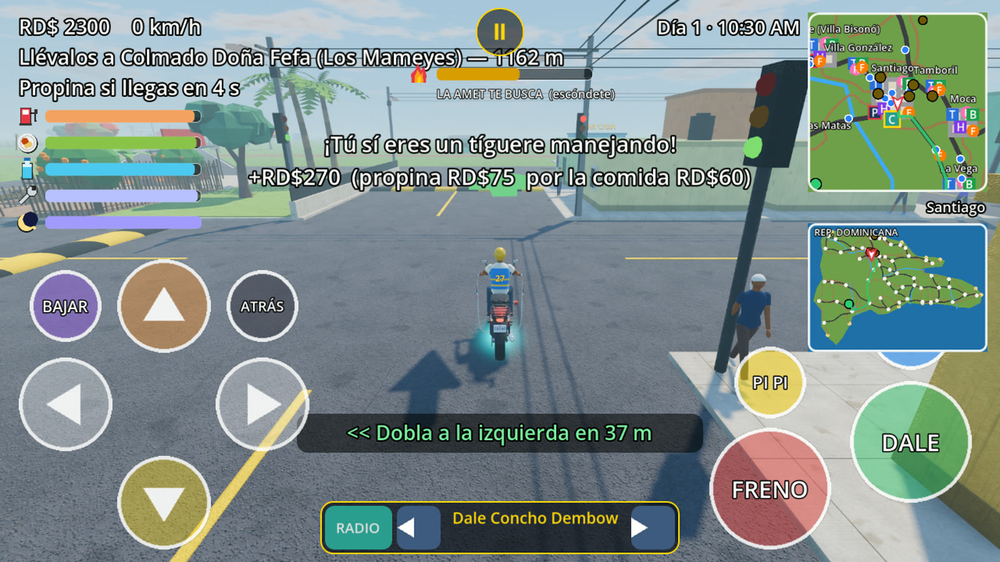

Ride a Dominican motoconcho (motorcycle taxi) across the whole Dominican Republic: pick up passengers, dodge traffic jams and the traffic police, stop for street food and upgrade your bike.
Download the pitch deck (PDF)Captured from the game. Narration in Spanish. Download the video (MP4)
| Developer | RDAYNT Games, an independent studio from the Dominican Republic |
| Platforms | Android, iPhone (in the browser) and Windows PC; consoles planned |
| Engine | Godot 4 |
| Genre | 3D driving and life simulation on an open map |
| Map | The whole Dominican Republic: 42 towns and cities, 14 beaches, 46 highway sections and 5 rivers |
| Content | For all ages: no alcohol, no profanity, no real brands |
| Languages | Spanish (English planned) |
| Price | Free on NT Juegos |






Screenshots, logo and video may be used in articles and videos about the game. Download the logo (PNG)
Email: ntjuegas@gmail.com
WhatsApp and calls: +1 829 210 3942
TikTok: @ntcityrd